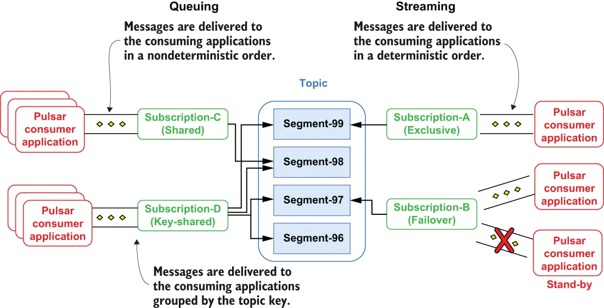
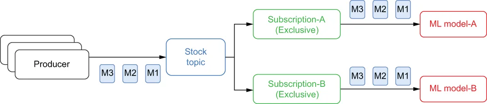
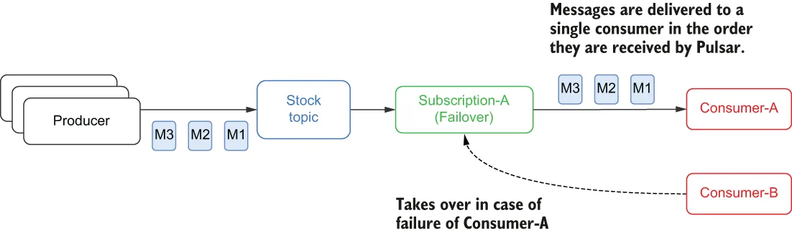
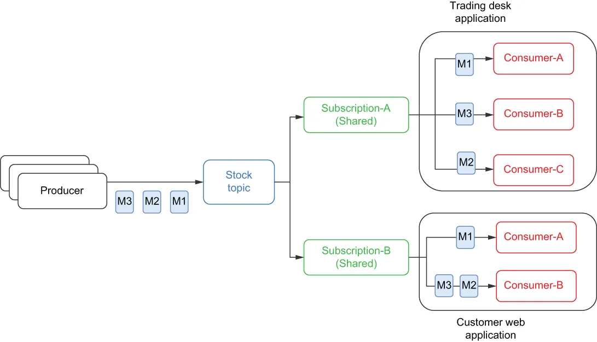
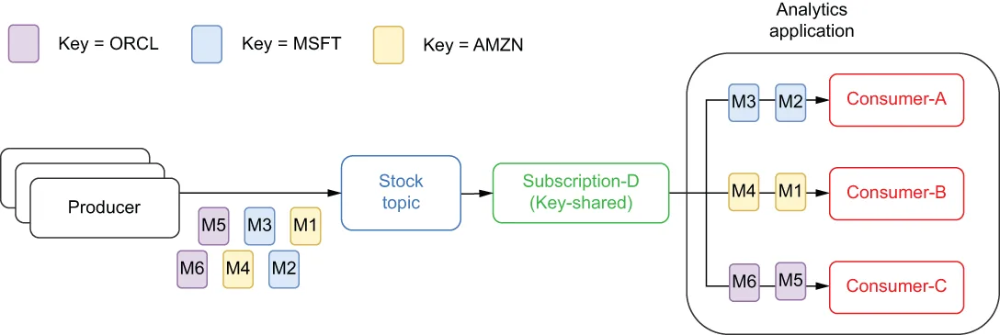

In Pulsar, all consumers use subscriptions to consume data from a topic. Subscriptions are just configuration rules that define how messages are delivered to consumers of a given topic. Pulsar subscriptions can be shared across multiple applications, and in fact, most subscription types are designed specifically for that usage pattern. Pulsar supports four different types of subscriptions: exclusive, failover, shared, and key-shared, as shown in figure 2.12.
在 Pulsar 中，所有消费者都通过订阅来消费主题中的数据。订阅只是一些配置规则，用于定义消息如何被投递给某个给定主题的消费者。Pulsar 的订阅可以在多个应用之间共享，事实上，大多数订阅类型就是专门为这种使用模式而设计的。Pulsar 支持四种不同类型的订阅：独占、灾备、共享和按 Key 共享，如图 2.12 所示。

Figure 2.12 Pulsar’s subscription modes
图 2.12 Pulsar 的订阅模式
A Pulsar topic can support multiple subscriptions concurrently, allowing you to use a single topic to serve applications with vastly different consumption patterns. It is also important to point out that different subscriptions on the same topic don’t have to be of the same subscription type. This allows you to use a single topic to serve both queuing and streaming use cases simultaneously.
一个 Pulsar 主题可以同时支持多个订阅，这使你能够用单个主题为消费模式差异极大的多个应用提供服务。还有一点值得指出：同一个主题上的不同订阅不必是同一种订阅类型。这使你能够用单个主题同时服务于排队类和流处理类用例。
Each of Pulsar’s subscription types serve a different type of use case, so it is important to understand them in order to use them properly. Let’s revisit the scenario where a financial services company that streams stock market quote information in real time into a topic named stock quotes wants to share that information across the entire enterprise and see how each of these subscription modes would be used for the same use cases.
Pulsar 的每种订阅类型服务于不同类型的用例，因此理解它们对于正确使用它们非常重要。让我们重新回到那个场景：一家金融服务公司把实时的股市报价信息流式写入一个名为 stock quotes 的主题，并希望在整个企业范围内共享这些信息；我们来看看这些订阅模式会如何被用于同样的用例。
Exclusive
独占订阅
An exclusive subscription only permits a single consumer to the messages for that subscription. If any other consumer attempts to subscribe to a topic using the same subscription, an exception will be thrown, and it won’t be able to connect. This mode is used when you want to ensure that each message is processed exactly once and by a known consumer.
独占订阅只允许单个消费者消费该订阅下的消息。如果任何其他消费者试图使用同一个订阅来订阅该主题，就会抛出异常，并且无法建立连接。当你希望确保每条消息恰好被处理一次、且由一个已知的消费者处理时，就会使用这种模式。

Figure 2.13 An exclusive subscription permits only a single consumer to consume the messages.
图 2.13 独占订阅只允许单个消费者消费消息。
Within our financial services organization, the data science team would use this type of subscription to feed the stock topic data through their machine learning models to train or validate them. This would allow them to process the records in exactly the order they were received to provide a stream of stock quotes in the proper time sequence. Each model would require its own exclusive subscription, as shown in figure 2.13, to receive its own copy of the data.
在我们这家金融服务机构中，数据科学团队会使用这种类型的订阅，把股票主题的数据输入他们的机器学习模型进行训练或验证。这将使他们能够严格按照记录被接收的顺序来处理，从而以正确的时间序列提供股票报价流。每个模型都需要各自的独占订阅，如图 2.13 所示，以接收属于自己的那份数据副本。
Failover subscriptions
灾备订阅
Failover subscriptions allow multiple consumers to attach to the subscription, but only one consumer is selected to receive the messages. This configuration allows you to provide a failover consumer to continue processing the messages in the topic in the event of a consumer failure. If the active consumer fails to process a message, Pulsar automatically fails over to the next consumer in the list and continues delivering the messages.
灾备订阅允许多个消费者挂接到该订阅上，但只有一个消费者会被选中来接收消息。这种配置使你可以提供一个备用消费者，在某个消费者发生故障时继续处理主题中的消息。如果当前活跃的消费者未能处理某条消息，Pulsar 会自动故障转移到列表中的下一个消费者，并继续投递消息。
This type of subscription is useful when you want single processing semantics with high availability of the consumers. This is useful if you want your application to continue processing messages in the event of a system failure and another consumer to take over if the first consumer were to fail for any reason. Typically, these consumers are spread across different hosts and/or data centers to ensure that the application can survive multiple outages. As you can see in figure 2.14, Consumer-A is the active consumer, while Consumer-B is the standby consumer that would be the next in line to receive messages if Consumer-A disconnected for any reason.
当你希望获得单处理语义、同时又要求消费者具备高可用性时，这种订阅类型就很有用。如果你希望自己的应用在系统发生故障时继续处理消息，并在第一个消费者因任何原因失效时由另一个消费者接管，那么它就非常有用。通常，这些消费者会被分散在不同的主机和/或数据中心上，以确保应用能够在多次中断中存活。正如你在图 2.14 中看到的，Consumer-A 是活跃消费者，而 Consumer-B 是备用消费者——如果 Consumer-A 因任何原因断开连接，它将是下一个接收消息的消费者。

Figure 2.14 A failover subscription has only one active consumer at a time, but it permits multiple standby consumers.
图 2.14 灾备订阅在同一时刻只有一个活跃消费者，但允许存在多个备用消费者。
One such example would be if the data science team from our financial services company had deployed one of their models using data from the stock quotes topic that generates market volatility scores that are combined with scores from other models to produce an overall recommendation for the trading team. It would be critical that exactly one instance of this model remain up and always running to help the trading team make informed trading decisions. Having multiple instances running and generating recommendations could skew the overall recommendation.
这样一个例子是：我们这家金融服务公司的数据科学团队使用 stock quotes 主题的数据部署了他们的某个模型，该模型生成市场波动性评分，这些评分会与其他模型的评分合并，为交易团队生成整体建议。至关重要的一点是：该模型必须恰好有一个实例保持运行，以帮助交易团队做出有依据的交易决策。如果有多个实例同时运行并各自生成建议，就可能使整体建议出现偏差。
Shared subscriptions
共享订阅
Shared subscriptions also allow multiple consumers to attach to the subscription; each of which can actively receive messages, unlike failover subscriptions that support only one active consumer at a time. Messages are delivered in a round-robin fashion to all the registered consumers, and any given message is delivered to only one consumer, as shown in figure 2.15.
共享订阅同样允许多个消费者挂接到该订阅上；其中每一个都可以主动接收消息，这与灾备订阅不同——后者在同一时刻只支持一个活跃消费者。消息以轮询的方式投递给所有已注册的消费者，并且任何给定的消息只被投递给一个消费者，如图 2.15 所示。

Figure 2.15 Messages are distributed across all consumers of a shared subscription.
图 2.15 消息被分发到共享订阅的所有消费者上。
This subscription type is useful for implementing work queues, where message ordering isn’t important, as it allows you to scale up the number of consumers on the topic quickly to process the incoming messages. There are no upper limits on the number of consumers per shared subscription, which allows you to scale up consumption by increasing the number of consumers beyond some artificial limit that is imposed by the storage layer.
这种订阅类型适用于实现工作队列——在那种场景下消息顺序并不重要，因为它允许你快速增加主题上的消费者数量来处理传入的消息。每个共享订阅的消费者数量没有上限，这使你能够通过增加消费者数量来提升消费能力，而不受存储层所施加的某种人为限制。
Within our fictitious financial services organization, the business-critical applications, such as our internal trading platforms, algorithmic trading systems, and customer facing website would all benefit from such a subscription. Each of these applications would use their own shared subscription, as shown in figure 2.15, to ensure that they each received all the messages published to the stock topic.
在我们这家虚构的金融服务机构中，那些业务关键型应用——例如内部交易平台、算法交易系统和面向客户的网站——都会从这种订阅中受益。这些应用中的每一个都会使用各自的共享订阅，如图 2.15 所示，以确保它们各自都能收到发布到该股票主题的所有消息。
Key-shared subscriptions
按 Key 共享订阅
The key-shared subscription also permitted multiple concurrent consumers, but unlike the shared subscription which distributes the messages in a round-robin manner amongst the consumers, it adds a secondary key index, which ensures that messages with the same key get delivered to the same consumer. This subscription acts as a distributed GROUP BY in SQL, where data with similar keys is grouped together. This is particularly useful in cases where you want to presort the data prior to consumption.
按 Key 共享订阅同样允许多个并发消费者，但与在消费者之间以轮询方式分发消息的共享订阅不同，它增加了一个二级 key 索引，确保具有相同 key 的消息被投递给同一个消费者。这种订阅的作用类似于 SQL 中的分布式 GROUP BY：具有相似 key 的数据被归拢到一起。在你希望在消费之前对数据进行预排序的场景中，这一点尤其有用。
Consider the scenario of the business analytics team needing to perform some analytics on the data in the stock topic. By having using a key-shared subscription, they are assured that all the data for a given ticker symbol will be processed by the same consumer, as depicted in figure 2.16, making it easier for them to join this data with other data streams.
考虑这样一个场景：商业分析团队需要对股票主题中的数据做一些分析。通过使用按 Key 共享订阅，他们可以确保某个给定股票代码的所有数据都由同一个消费者处理，如图 2.16 所示，这使他们更容易把这些数据与其他数据流关联起来。

Figure 2.16 Messages are grouped together by the specified key in a shared-key subscription.
图 2.16 在按 Key 共享订阅中，消息按指定的 key 被归拢到一起。
In summary, exclusive and failover subscriptions allow only one consumer per topic partition per subscription, which ensures that messages are consumed in the order they are received. They are best applied to streaming use cases where strict ordering is required.
总而言之，独占订阅和灾备订阅在每个订阅的每个主题分区上只允许一个消费者，这确保了消息按它们被接收的顺序被消费。它们最适合应用于需要严格顺序的流处理用例。
Shared subscriptions, on the other hand, allow multiple consumers per topic partition. Each consumer within the subscription receives only a portion of the messages published to a topic. Shared subscriptions are best for queuing use cases, where strict message ordering is not required but high throughput is.
而共享订阅则在每个主题分区上允许多个消费者。订阅内的每个消费者只收到发布到主题的其中一部分消息。共享订阅最适合排队类用例——这类用例不要求严格的消息顺序，但要求高吞吐量。